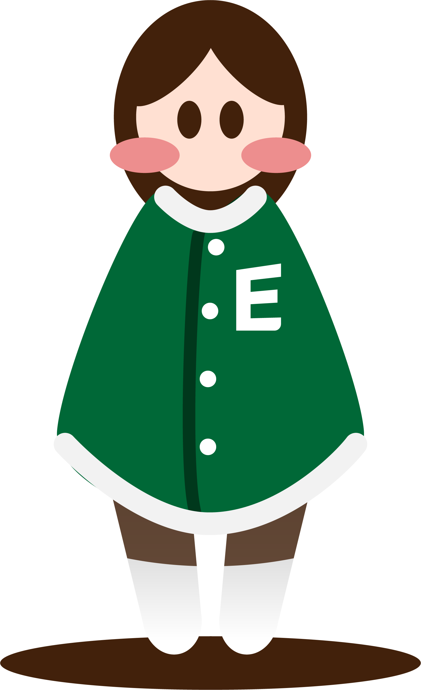
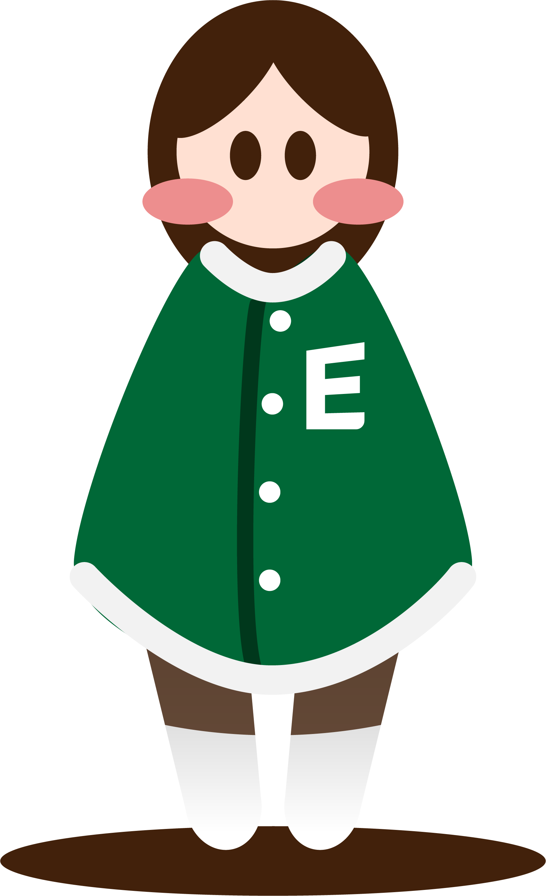

창업은 왜 하셨나요?

 


굿바이슈가베어
“이 부분은 그때나 지금이나 동일하네요 ㅎㅎ
이화는 저에게 참 제 인생으로나 일으로나 큰 부분을 알려주었네요.
이 부분이 시간이 지나다보니 건강하게 자리잡아,
자기존중이 중요한만큼 타인도 자기 자신이 중요하다는 것을 느꼈고
자기 존중을 넘어 타인을 존중하는 것까지 현재는 제가 성장하였어요.”

이세계는놀이터예요
“학교에 들어와서 만난 친구들과 선생님의 영향이 교차되어 지금의 제가 되었어요.
그리고 지금의 제가 지향하는 삶이 만들어진 것도 이들의 영향이 컸습니다.
지향하는 삶에 더 가까이가는 길이
지금의 식당을 운영하는 것이 되기도 했네요.
이들을 만날 수 있었던 곳이 이화이고, 제가 보다 더 큰 사람이 될 수 있는 땅이 된 곳이 이화입니다.”

주객전도
“창업 이후 우연히 계절학기로 기업가정신연계전공 수업을 들었습니다.
수업을 통해 나의
창업과정을 되돌아보며 반성과 칭찬을 하는 기회를 가졌습니다.
여러모로 도움이 되는
수업이었습니다.”
(*기업가정신연계전공이란? 1-2 줄 정도 각주처럼 추가)